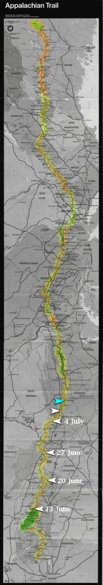

| Home | The Fox | Statistics | Maps | Churches |
StatusConfirmed - Evening 10 July 1998:Confirmed - the Fox slept in Lynchburg, VA
Projected - Evening 12 July 1998: [10 July 1998] Within the past week the Fox was given an unanticipated invitation from a friend to stay in Lynchburg, which he has accepted. He reported that he was fed a very good meal. The Fox reports that temperature highs have been around 70 and 80 degrees, and that during difficult uphill climbs he is `incredibly' sweaty. Those vistas which are available to him consist primarily of ridgetop overlooks, and he recently enjoyed one good sunset over a valley (he usually tries to be in camp by sunset). Recently the Fox hiked a |

Legend
|